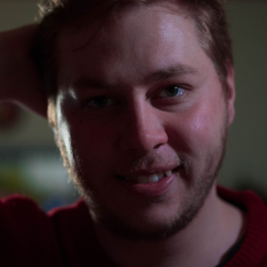
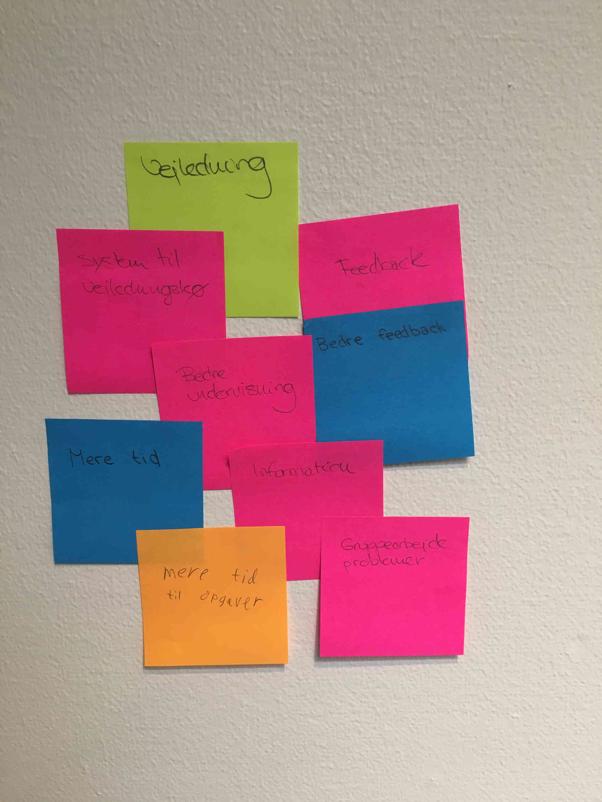
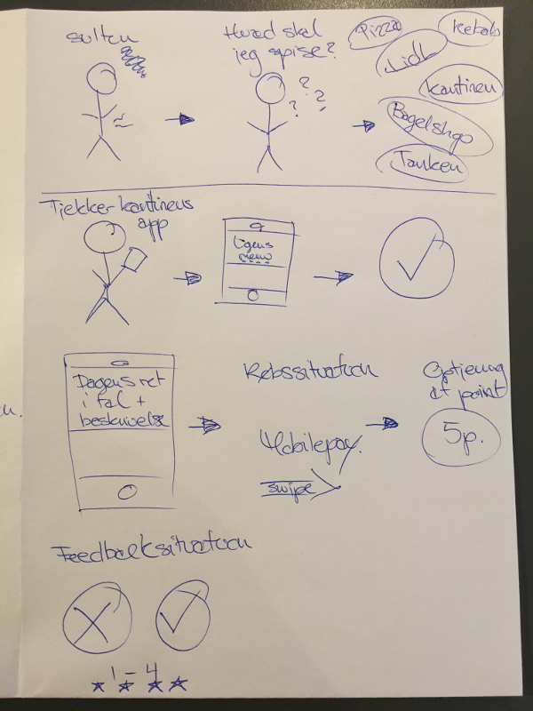
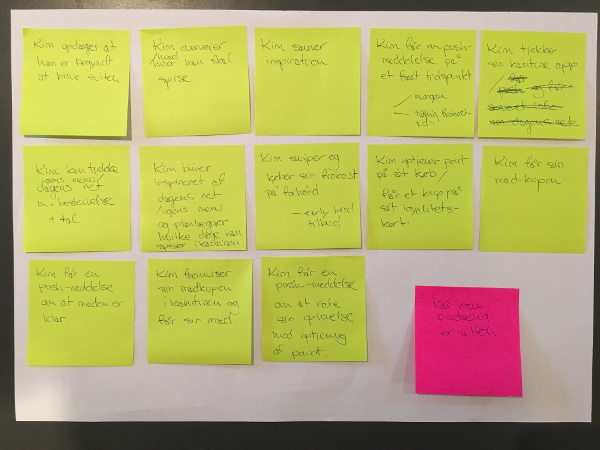
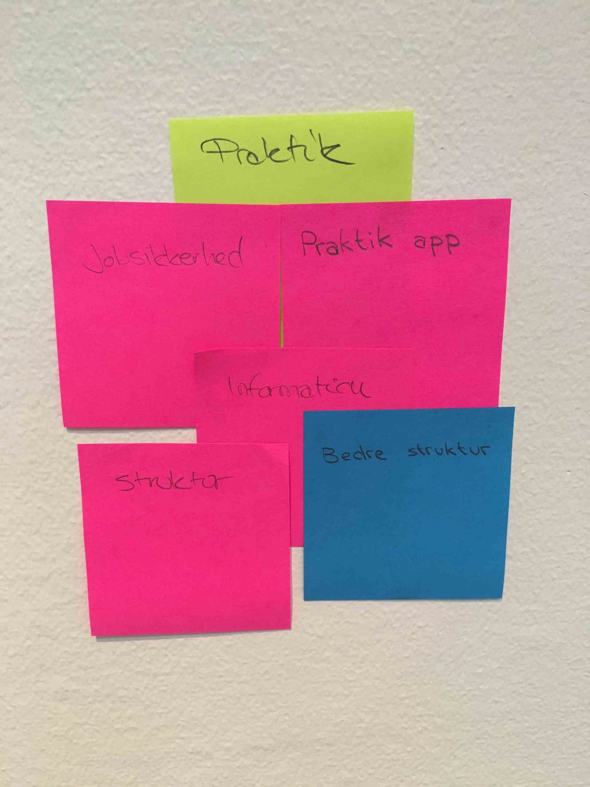
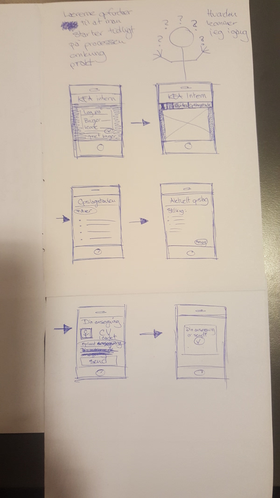
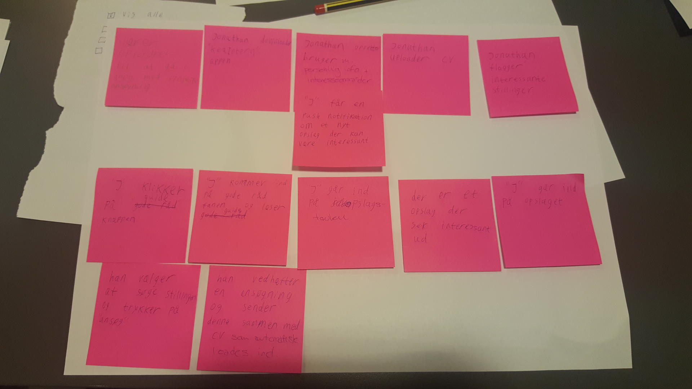
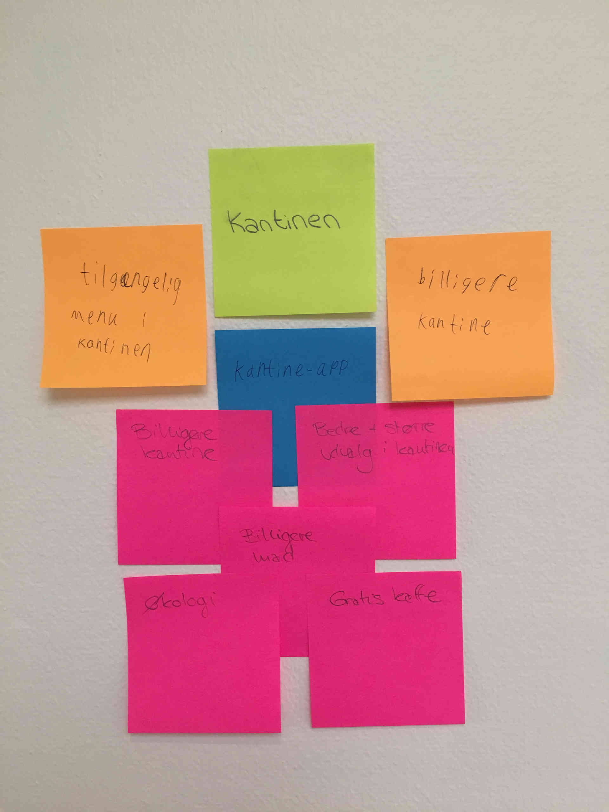
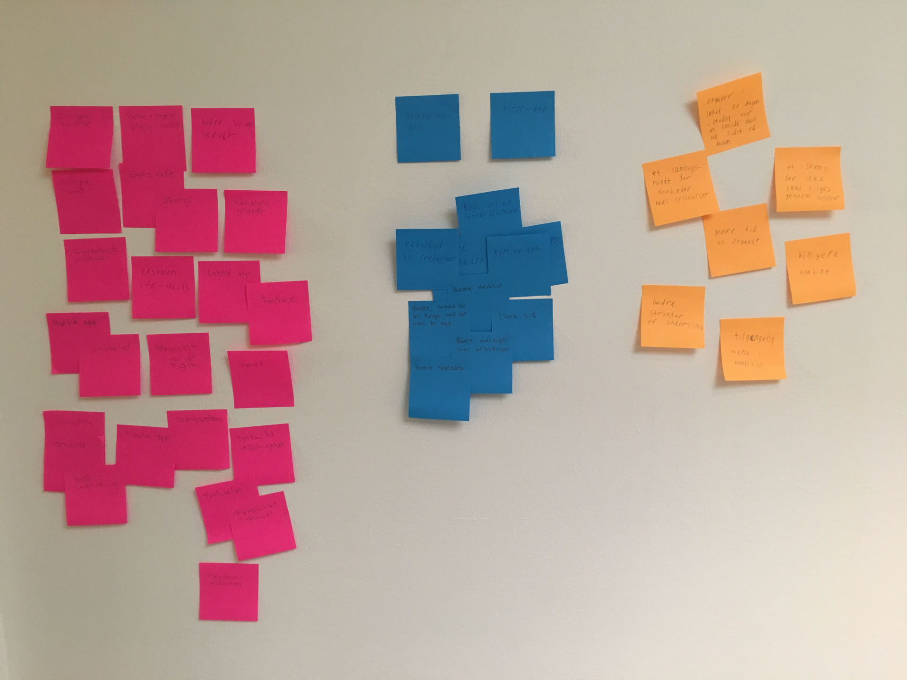

-

Jacob Kristensen
-
Laura Amalie
-
Sidsel Mathilde
-

Martin Knuth
-
Rasmus Merhøj
Trello-board
#burndownchart
Scrum video
Interview- guide og noter
IP – Anonym Medstuderende
- Hvorfor valgte du kea?
- Ville gerne lave noget mere grafisk og få det på papir
- Hvad er dine spidskompetencer inden for mmd?
- Design og animation, (AE) noget man reelt kommer til at bruge.
- Hvad er du ikke så stærk i inden for mmd¿
- UX og indsamling af data og salg af produkt.
- Hvis du kunne ændre én ting på kea, hvad ville det så være? (og hvorfor?)
- bedre struktur, af undervisning tid osv.
- Nævn 3 ting som kunne gøres bedre i kantinen
- pris, billigere kaffe, menu (ved ikke hvor den findes)
- Nævn 3 ting som kunne gøres bedre i forhold til skemaet
- Fuckfronter (et reelt skema, man ikke skal tilgå fra fronter, struktur)
- Nævn 3 ting som kunne gøres undervisningen bedre og mere struktureret
- Snak mere sammen (underviserne) bedre vejledning, forkert prioritering af tid (bla andet at man underviser hele dagen, og så smider en opgave på)
- Hvad synes du kea mangler?
- Har mange ressourcer, men mangler noget, der samler det
- Hvad kunne man gøre for at forbedre det?
- Ingen anelse
- Hvad er det bedste ved kea?
- Kantinen, der er et godt miljø. folk engagerer sig.
- Hvad er den mest uduelige app?
- En app om peter ulf (med uduelige informationer) (Ulfen Peter)
Idé 1 – Kantinen
Kantinen – Pain Point
Udvalget i KEA’s kantine møder ikke de studerendes behov eller rådighedsbeløb.
Experience Map – Kantinen
Skitse – Kantinen
Storyboard – Kantinen
Test video – Kantinen
Idé Grundlag
- Oprettelse af bruger:
- Navn
- Studienummer/mail
- Alder
- Køn
- Kortoplysninger - linket til mobilepay
- Præferencer
- Oversigt over ugens menu
-
Loyalitetsprogram:
- Point system
- Efter loyalitet baseret på købshistorik
- Efter aktivitet i forbindelse med:
- Afstemninger
- Feedback på oplevelsen af det købte måltid
- Valuecards
-
Medbestemmelse fra brugergruppen
- De studerendes maddag
- Ugentlig afstemning om kommende uges menu
- Early bird tilbud til dem, som bestiller inden kl. X eller de 10/20 første
-
Pushmeddelelser:
- “Maden er klar”
- “Godmorgen - i dag serveres ….”
- “Er I ved at være sultne? Kom ned i kantinen og nyd …. med os”
Brugssituationer:
- Når man tager afsted om morgenen
- Når man begynder at blive sulten inden frokosttid
Idé 2 – Praktik
Pain point – Praktik
Praktik (og evt udlandsophold?)
De studerende på KEA føler at praktik-søgningen er en uoverskuelig proces og savner et værktøj, hvormed man kan få vejledning til at planlægge sin praktiksøgning step by step og få et overblik over mulige praktiksteder.
Experience Map – Praktik
Skitse – Praktik
Storyboard – Praktik
Test video – Praktik
Idé 3 – Vejledning
Vejledning & tutors
De studerende på KEA kan til tider føle sig fortabte i situationer efter de skemalagte timer, hvis en udfordring opstår og underviserne er gået. De studerende er frustrerede over den nuværende systematisering af vejledning, som er karakteriseret ved uendelig lang ventetid.
Experience Map – Vejledning
Skitse – Vejledning

Test video – Vejledning
Experience Map – (For alle idéer)
Persona – (For alle idéer)
Jonathan → Foto
Demografi:
Alder: 22 år
Køn: Mand
Bopæl: Vesterbro - bor til leje
Beskæftigelse: Studerende på KEA med studiejob på Halifax
Beskrivelse:
Jonathan er en ung fyr på 22 år, som studerer MMD på KEA. Han elsker at være social og deltager tit i de sociale arrangementer, som KEA tilbyder. Han lider tit af fomo, hvis han ikke kan deltage og har derfor svært ved at sige nej til en god fest.
Han er en kreativ sjæl, som er vild med at tegne. Hans primære interesse er indenfor markedsføring og branding. Han har søgt ind på MMD, for at gøre karriere indenfor reklamebranchen. Jonathan er en middel-ambitiøs studerende - han ønsker ikke at studiet skal fylde for meget, så han ikke har tid til sine venner. Omvendt oplever han udfordringer omkring at studiet er for high-paced. Han føler derfor til tider ikke at han kan følge med. Dertil føler han også ofte, at han mister overblikket i informationsstrømmene på studiet. Han savner en måde, hvorpå man kan skabe et overblik i kaos.
Udover han interesser indenfor markedsføring og branding, er Jonathan også en stor madentusiast og livsnyder. Når han hænger ud med sine venner, nyder han derfor at lade mad være omdrejningspunktet. Hans gutter har en mandeloge, hvor de mødes en gang om måneden - enten ude eller hos hinanden, hvor værten står for menuen. Han er altid frisk på at eksperimentere i køkkenet. Jonathan har derfor også visse standarder, for hvad han har lyst til at spise. Det skal være sundt, men vigtigst af alt; det skal smage af noget. Jonathan føler sig ofte uinspireret over udvalget af omkringliggende spisesteder i nær radius af KEA. Han synes hverken at de lever op til hans præferencer eller pengepung. Dette har resulteret i at han som ofte vælger at planlægge og forberede sin frokost hjemmefra. Han går dog lidt og drømmer om en kantineordning, som var til at betale og som tilbød et varieret og omskifteligt udvalg.
Nettet er en naturlig del af hans hverdag. Han benytter det som redskab til at kommunikere med venner, underholdning, uddannelse, job og informationssøgning. Dette sker på tværs af forskellige platforme - primært computer og smartphone.
Valg af idé
Benchmark
| Målgruppens størrelse | Målgruppens skalerbarhed | Værdien for virksomheden | Værdien for målgruppen | Realiserbarhed | Konkurrence | Total | |||||||
| Vægtning | Score | Vægtning | Score | Vægtning | Score | Vægtning | Score | Vægtning | Score | Vægtning | Score | ||
| Keantinen | 0,2 | 3 | 0,4 | 2 | 0,5 | 1 | 1 | 2 | 0,8 | 1 | 0,5 | 2 | 5,7 |
| Gitgudhub | 0,2 | 1 | 0,4 | 1 | 0,5 | 2 | 1 | 3 | 0,8 | 3 | 0,5 | 1 | 7,5 |
| kea intern | 0,2 | 3 | 0,4 | 3 | 0,5 | 3 | 1 | 2 | 0,8 | 2 | 0,5 | 3 | 8,4 |
Test af valgt idé (Keaintern)
2. test